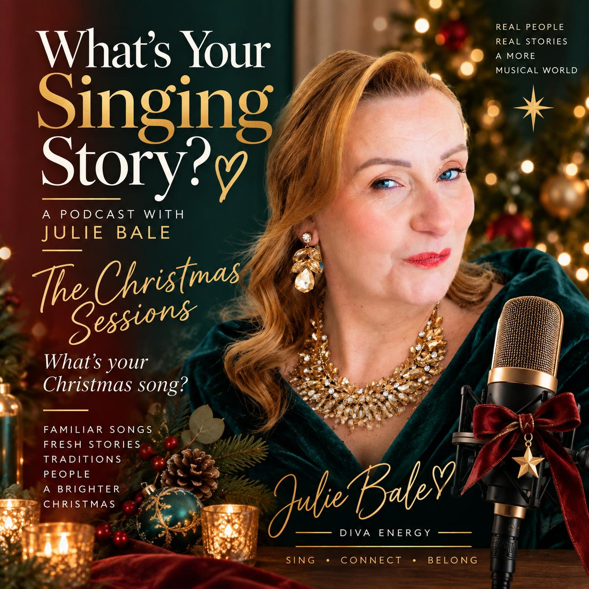
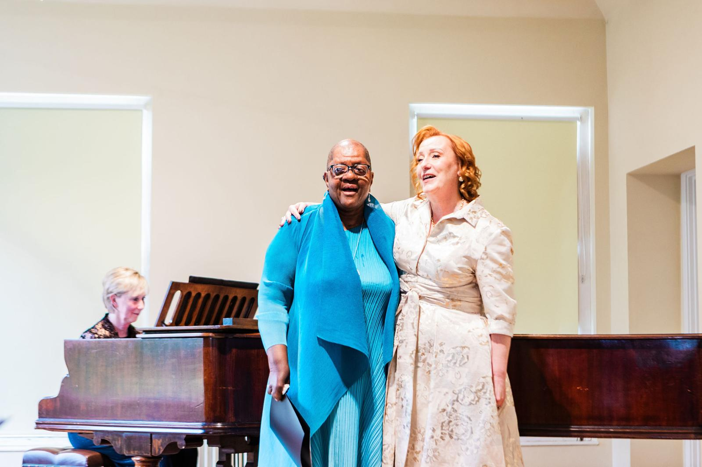
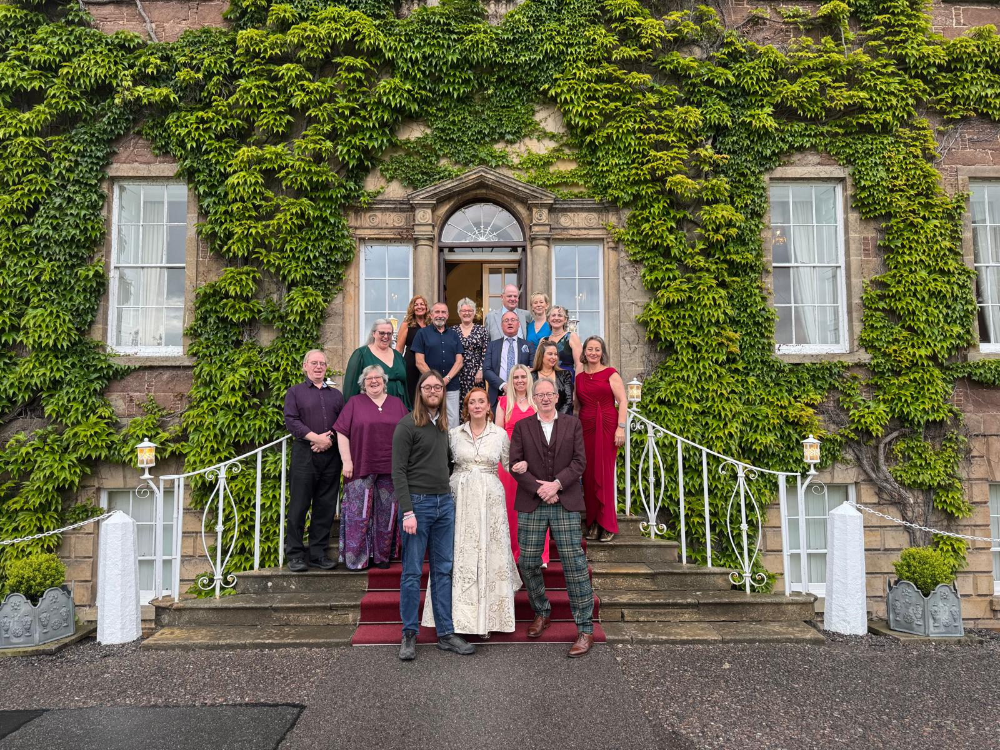
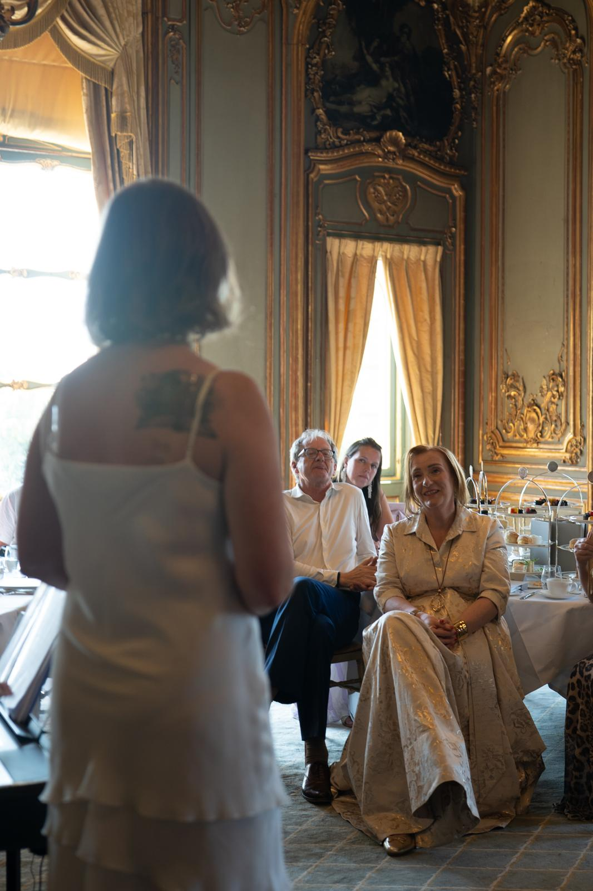

Listen
Julie Bale
Discover the voice, confidence and performer that have been waiting to be heard.
Start your singing storyPerhaps you’ve always wanted to sing.
Perhaps you used to, and life got in the way. Perhaps you sing in a choir but would never dream of standing up alone. Perhaps somebody told you, years ago, that you couldn’t. Or perhaps you simply wonder whether it’s too late. It isn’t.
The six-month private mentorship.
Six months · 10 places · £499 a month
Discover the programmeJulie unlocked something deep within me and lifted my whole world to a new level. Now each morning feels like a song I can sing with confidence.

The VIP Diva Day A whole day devoted to your voice, with a professional accompanist. Explore ›
Diva Days & Open Days Come and sing. No need to arrive confident, just willing to join in. Explore › Retreats Singing somewhere beautiful, with time to enjoy being there. Explore ›I’m Julie Bale, a dramatic soprano and Vocal Transformation Specialist. I’ve spent my life singing, performing and helping other people discover what their own voice can do. I still perform. I still love it.
More about Julie
Listen

Watch
Start here. I’m putting together a free first experience to help you find your voice. Join the Diva Energy emails and I’ll send it your way.